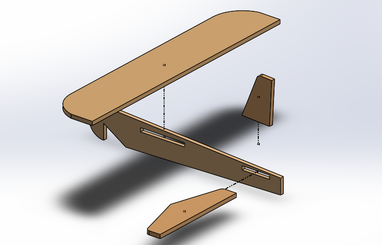

Glider Fabrication
SolidWorks
To accurately gauge the feasibility of the glider and make realistic designs without having to waste resources, SolidWorks was used. Here, the part, drawing, and assembly were made before the manufacturing process was initiated.

-1.png)
-1.png)
-1.png)
-1.png)
EIH
The Engineering Innovation Hub is a center for Notre Dame student engineers to create. Confidence and Oluwatomi used the bandsaw, dremel, and files to create the glider. It was their first time using the advanced manufacturing sector for a personal project.